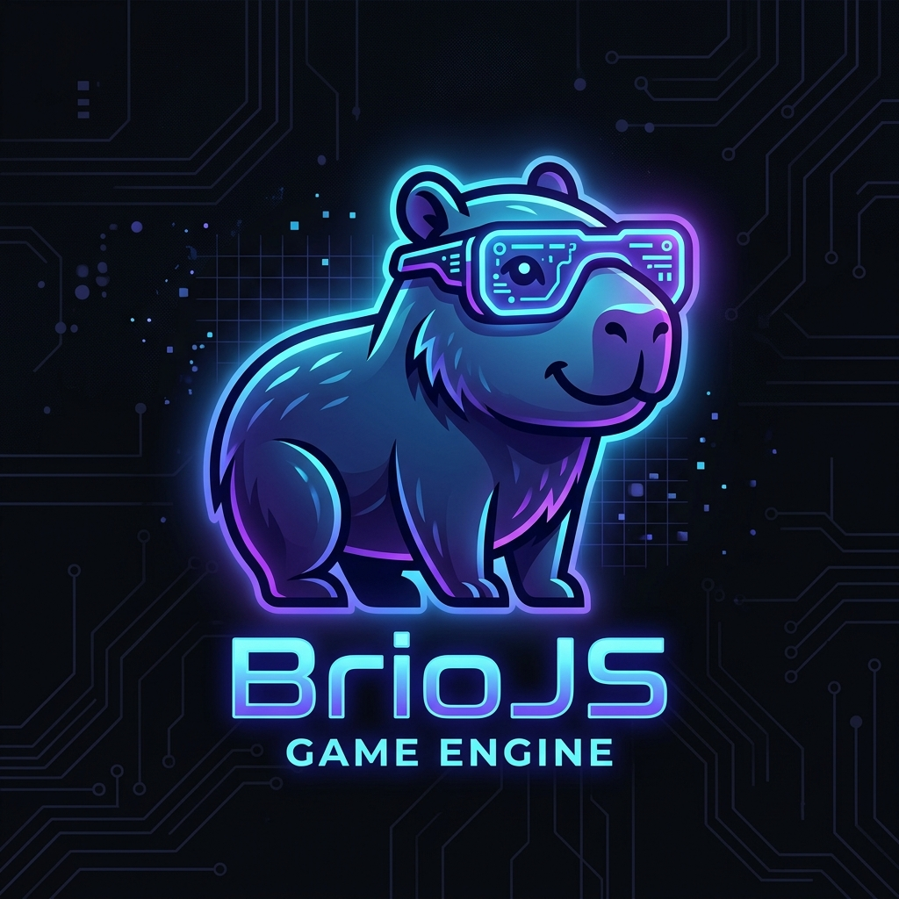
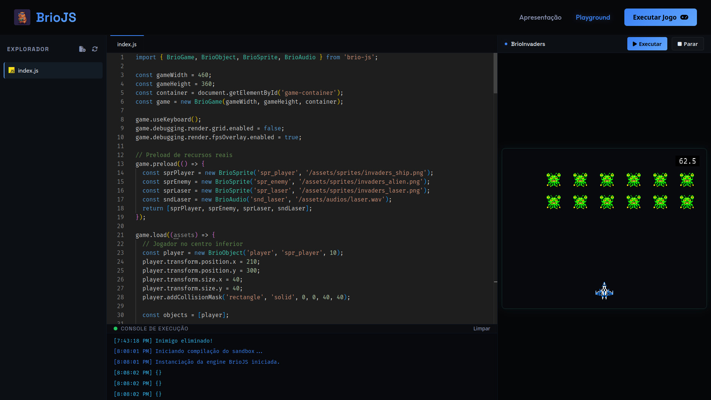

BrioJS
Uma Plataforma Intermediária para o Aprendizado de Desenvolvimento de Jogos
Acadêmicos
Gustavo Luiz Gregorio
Lucas Bigliardi Vicente
Orientadora
Profª. Carine Azevedo Dantas
O Problema: O Vácuo Educacional
A transição complexa que desmotiva novos desenvolvedores
Visual Coding (Scratch)
- Facilidade extrema (no-code)
- Lógica de blocos e drag & drop
- Ausência de sintaxe real
BrioJS Engine
- Código Real (TS/JS Vanilla)
- Renderização Canvas 2D nativa
- Abstração didática direta
Engines Comerciais
- Unity, Godot e Unreal
- Complexidade estrutural alta
- Sintaxe pesada (C# / C++)
A Solução: BrioJS
Facilidade, acessibilidade e foco didático direto no navegador
Roda 100% no Navegador
Sem processos de instalação ou setups complexos de compilação.
Sintaxe Real
Utilização nativa de JS e TypeScript para preparar o aluno para a web.
Didática Direta
Reforça boas práticas de orientação a objetos, pooling e loops.

Ciclo de Vida da Aplicação BrioJS
Do código escrito ao loop ativo de renderização no navegador
1. Setup & Inicialização
Instanciação do motor com new BrioGame(), vinculação do Canvas ao DOM e carregamento dos módulos de depuração.
2. Preload Assíncrono
Carregamento assíncrono de mídias (sprites, áudios e atlas) através de Promises para garantir integridade física.
3. Load & Entidades
Instanciação de entidades do jogo (BrioObject), carregamento de mapas e registro do estado inicial do loop.
4. Game Loop (60 FPS)
Execução lógica controlada via requestAnimationFrame. Atualização de deltaTime, inputs de teclado e colisões AABB.
5. Render (Desenho)
Limpeza de buffers do Canvas Context 2D e desenho em tela ordenado por camadas (layering de profundidade).
Análise SWOT Educacional
Posicionamento do BrioJS frente ao cenário acadêmico
Forças (Strengths)
- Código aberto (Open Source)
- Execução leve in-browser
- Baixa barreira técnica inicial
Fraquezas (Weaknesses)
- Estágio inicial de maturidade
- Comunidade pequena em formação
- Módulos 3D não implementados
Oportunidades (Opportunities)
- Adoção em Escolas e IFs
- Parcerias para laboratórios básicos
- Minicursos de capacitação didática
Ameaças (Threats)
- Monopólio de engines comerciais (Unity, Unreal, Godot)
- Evolução de ferramentas no-code
- Velocidade de novas APIs web
Sustentabilidade e Modelo Futuro
Foco social inicial e expansão sustentável pós-penetração de mercado
Impacto Social e Científico
O BrioJS é open-source e gratuito. O foco inicial e a médio prazo é puramente didático e acadêmico, resolvendo problemas de hardware e licenças em laboratórios de informática de salas de aula públicas.
Havendo penetração na rede de ensino, o motor atua como fundação para a criação de serviços de valor agregado baseados na comunidade.
Plataforma Core
Gratuito & Open-Source
SaaS de Editores de Código
Visual workspace escolar para gerenciamento e exportação de turmas.
Assistentes Empresariais Baseado em IA
Tutor inteligente de código baseado em inteligência artificial pedagógica.
Cursos & Certificações
Treinamentos especializados e planos de aula estruturados para docentes.
Design Science Research (DSR)
O BrioJS consolida-se como um artefato prático de impacto educacional, buscando ser validado sob metodologia de pesquisa acadêmica.
Próximos Passos & Expansão de Produto:
Validação Científica
Testes comparativos de usabilidade com turmas de ensino técnico do IFPR Colombo para validar o aprendizado cognitivo.
Expansão 3D Avançada
WebGL/WebGPUPortabilidade gráfica de renderização tridimensional de alta performance sem depender de motores comerciais pesados.
brio-agent Integrado
RAG / SkillsEvolução de copiloto autônomo baseado em manifestos locais do projeto e indexação semântica de memória vetorial.
Obrigado!
Perguntas e Discussão